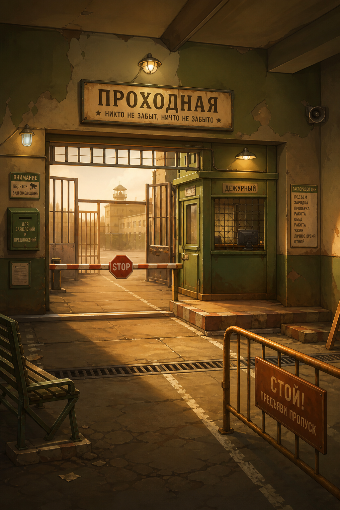
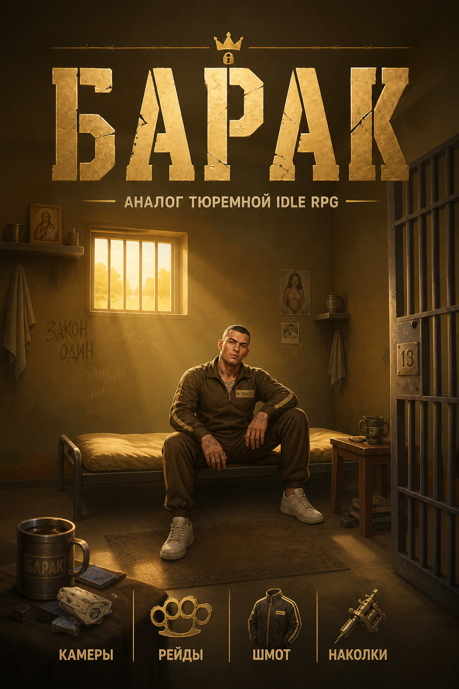
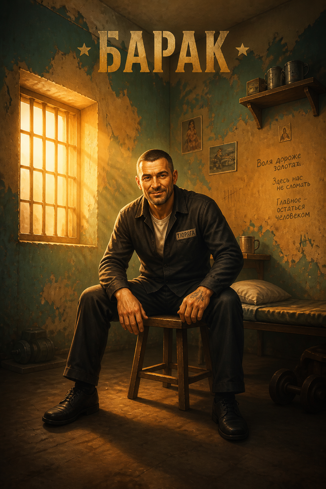
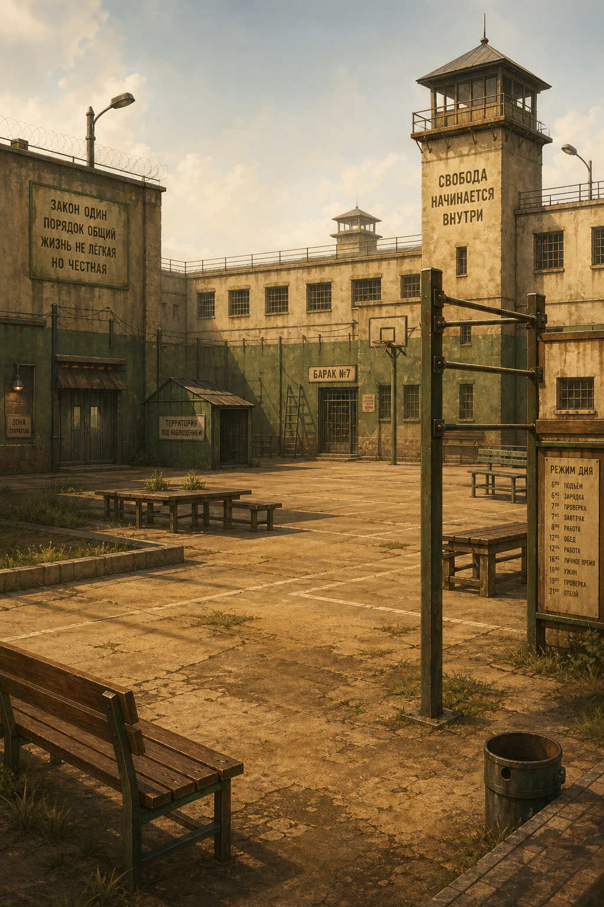
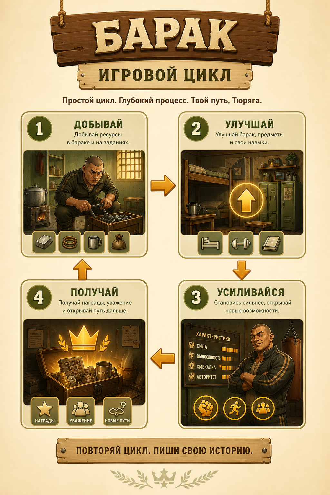
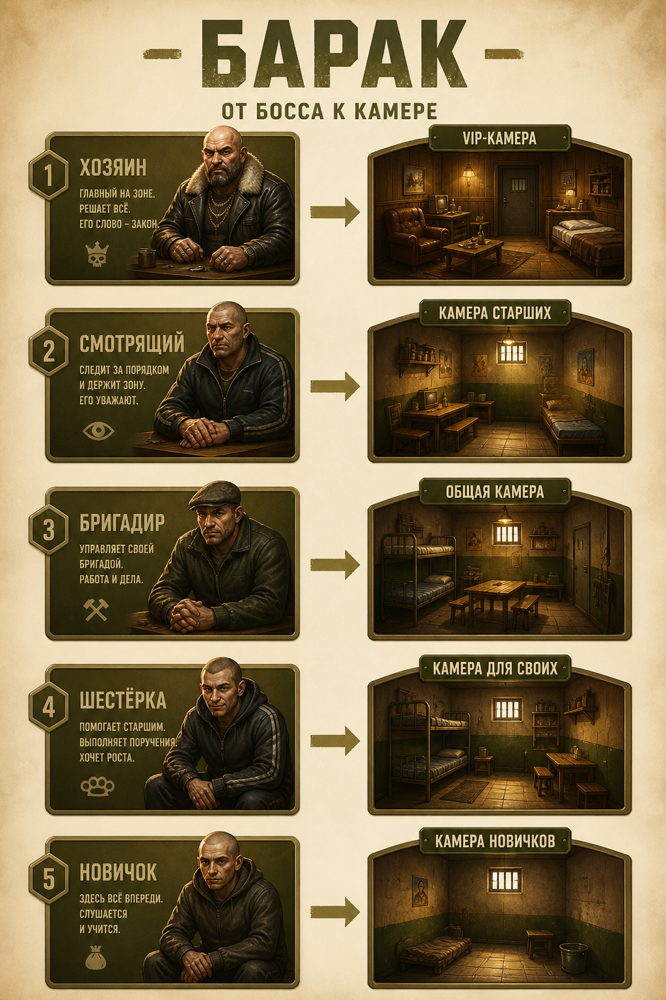
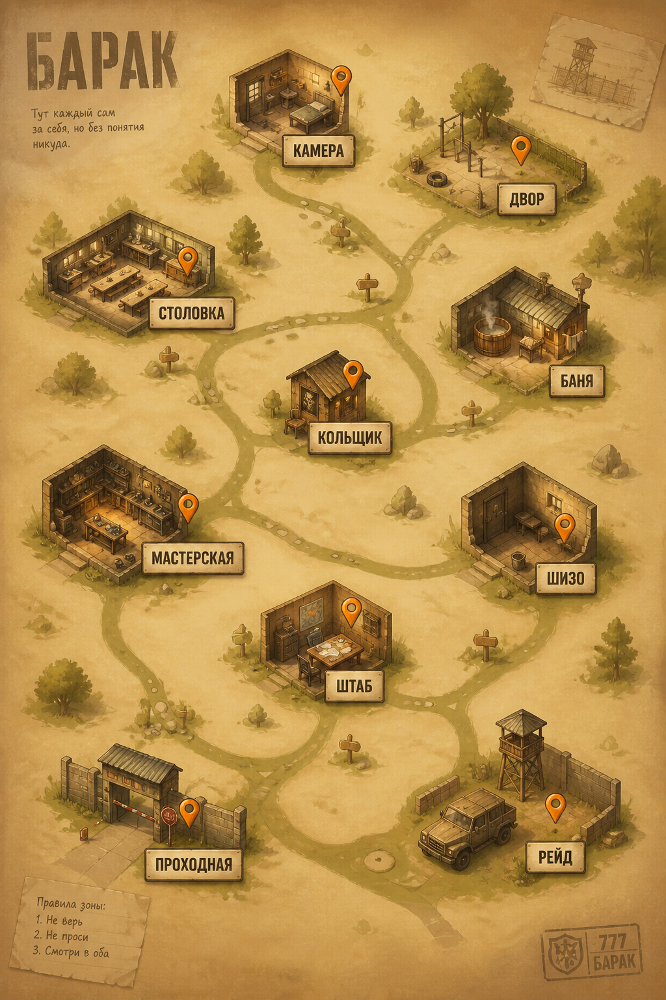
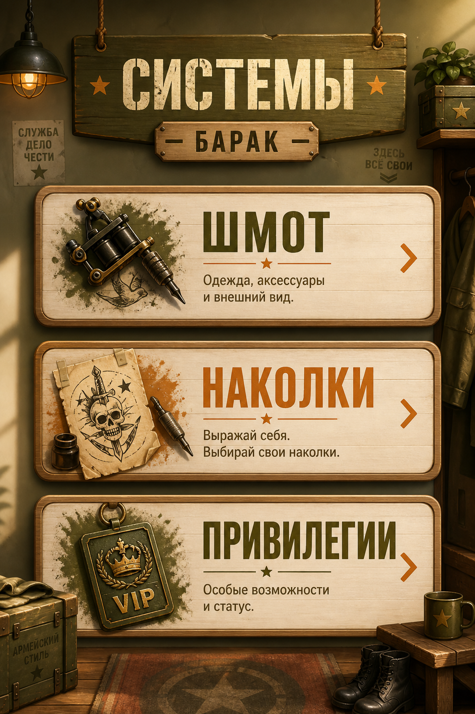

Проходная — референс палитры
Тёплый металл, охра, олива — базовые цвета продукта.

Обложка

Камера

Двор

Игровой цикл
Больше воздуха между блоками, крупные панели.

Босс → камера

Карта зоны

Системы
